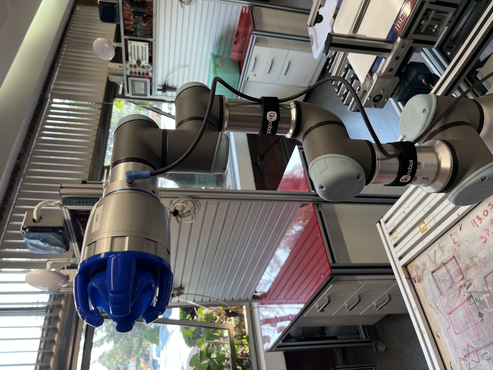
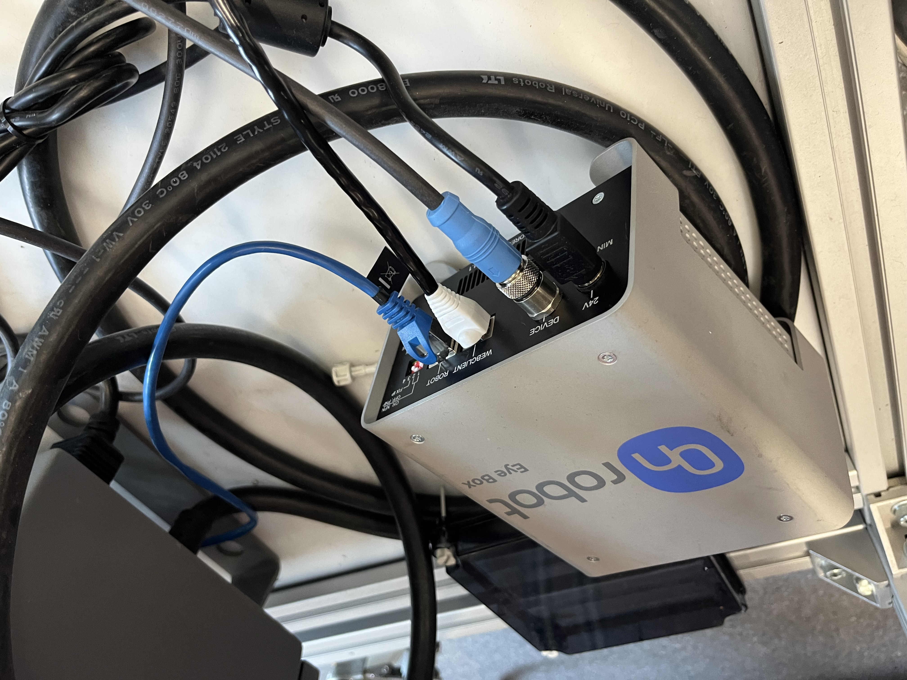
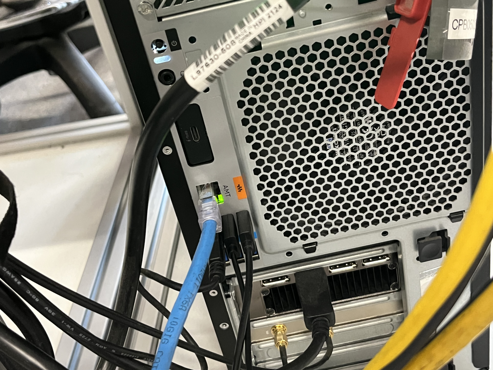
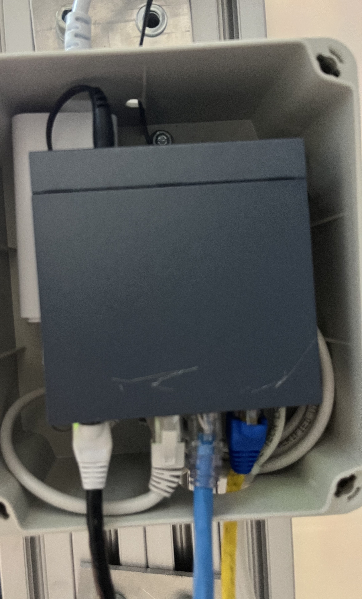

Conexion de un robot UR3 (red 192.168.1.x) con PLCs Horner (red 192.168.3.x) usando una PC Windows como router
El sistema integra un robot UR3 (Universal Robots) con los PLCs Horner XL4 del sistema de bandas. El robot manipula cajas usando una garra OnRobot controlada por un dispositivo llamado Eye Box.
El problema fundamental es que el UR3 y los PLCs estan en redes diferentes:
| Equipo | Red | Razon |
|---|---|---|
| Robot UR3 + Eye Box | 192.168.1.0/24 |
El Eye Box esta configurado de fabrica en esta red |
| PLCs Horner | 192.168.3.0/24 |
Red del sistema de bandas transportadoras |
Para que el PLC Horner se comunique con el UR3 via Modbus TCP, se utiliza una PC Windows con dos interfaces de red que actua como router entre ambas redes.

Robot UR3 con garra OnRobot montada. La garra se controla via el Eye Box.
192.168.1.x y requiere que el robot UR3 este en la misma subred para comunicarse con la garra.
El OnRobot Eye Box es el controlador de la garra robotica. Este dispositivo:
192.168.1.x192.168.1.0/24)
OnRobot Eye Box con conexiones Ethernet (cable azul) y alimentacion 24V. Este dispositivo obliga al UR3 a permanecer en la red 192.168.1.x.
Como no se puede cambiar la red del Eye Box sin riesgo de perder la comunicacion con la garra, la solucion es mantener al UR3 en la red .1 y usar la PC como puente hacia la red .3 donde estan los PLCs.
Red 192.168.1.0/24 Red 192.168.3.0/24
(Robot + Eye Box) (PLCs Horner)
┌─────────────┐ ┌─────────────────┐
│ Eye Box │ │ HORNER_1 (.131) │
│ 192.168.1.x│ │ HORNER_2 (.132) │
└──────┬──────┘ │ HORNER_3 (.133) │
│ └────────┬────────┘
┌──────┴──────┐ ┌──────────────────┐ │
│ UR3 │ │ PC Windows │ │
│ 192.168.1.76├─────┤ .1.28 │ .3.228├─────────────┘
└─────────────┘ │ (Ethernet) (Wi-Fi)│
gw: .1.28 └──────────────────┘
IP Forwarding
Enabled
| Equipo | IP | Mascara | Gateway | Red |
|---|---|---|---|---|
| UR3 | 192.168.1.76 |
255.255.255.0 |
192.168.1.28 |
192.168.1.0/24 |
| PC Windows (Ethernet → robot) | 192.168.1.28 |
255.255.255.0 |
(vacio) | 192.168.1.0/24 |
| PC Windows (Wi-Fi → PLCs) | 192.168.3.228 |
255.255.255.0 |
192.168.3.1 |
192.168.3.0/24 |
| PLC Horner (el que habla con UR3) | 192.168.3.12 |
255.255.255.0 |
192.168.3.228 |
192.168.3.0/24 |
Un grupo de equipos que comparten un rango de IPs y pueden comunicarse directamente entre si sin necesitar un router. La notacion /24 significa mascara 255.255.255.0 (los primeros 3 octetos identifican la red, el ultimo identifica al equipo).
Es la IP del equipo al que un dispositivo envia paquetes cuando el destino esta en otra red. Si el UR3 quiere hablar con un PLC en la red .3, envia el trafico a su gateway (192.168.1.28 = la PC Windows).
Equipo con interfaces en dos o mas redes que reenvía paquetes entre ellas. En este caso, la PC Windows cumple ese rol porque tiene una interfaz en la red .1 y otra en la red .3.
Funcion del sistema operativo que permite reenviar paquetes de una interfaz de red a otra. Por defecto Windows NO lo hace (solo procesa paquetes dirigidos a si mismo). Hay que habilitarlo explicitamente.
La PC Windows tiene dos interfaces de red activas simultaneamente:
192.168.1.28)192.168.3.228)
Parte trasera de la PC Windows mostrando las conexiones Ethernet (cable azul hacia el UR3) y de red.
192.168.1.76 (el UR3).3, envia el trafico a su gateway: 192.168.3.228 (la PC)192.168.1.0/24 esta conectada directamente por su interfaz Ethernet192.168.1.28 (la PC)En el Teach Pendant del robot:
| Parametro | Valor |
|---|---|
| IP Address | 192.168.1.76 |
| Subnet Mask | 255.255.255.0 |
| Default Gateway | 192.168.1.28 |
192.168.1.28 le dice al robot "para alcanzar otras redes, manda los paquetes a la PC Windows".

Controlador del UR3 con las conexiones Ethernet visibles en la parte inferior.
| Parametro | Valor |
|---|---|
| IP | 192.168.1.28 |
| Mascara | 255.255.255.0 |
| Gateway | (vacio - no poner nada) |
| Parametro | Valor |
|---|---|
| IP | 192.168.3.228 |
| Mascara | 255.255.255.0 |
| Gateway | 192.168.3.1 (o el gateway de esa red) |
ipconfig Adaptador Ethernet: Direccion IPv4. . . . . . . : 192.168.1.28 Mascara de subred . . . . . : 255.255.255.0 Puerta de enlace . . . . . : Adaptador Wi-Fi 3: Direccion IPv4. . . . . . . : 192.168.3.228 Mascara de subred . . . . . : 255.255.255.0 Puerta de enlace . . . . . : 192.168.3.1
Por defecto Windows no reenvia paquetes entre interfaces. Hay que habilitarlo manualmente desde PowerShell como Administrador.
Set-NetIPInterface -InterfaceAlias "Ethernet" -Forwarding Enabled Set-NetIPInterface -InterfaceAlias "Wi-Fi 3" -Forwarding Enabled
Get-NetIPInterface para ver los nombres exactos.
Get-NetIPInterface -AddressFamily IPv4 | Format-Table ifIndex,InterfaceAlias,Forwarding,ConnectionState
Debe mostrar Enabled en las interfaces Ethernet y Wi-Fi.
# Verificar valor actual: Get-ItemProperty -Path "HKLM:\SYSTEM\CurrentControlSet\Services\Tcpip\Parameters" -Name IPEnableRouter # Si no esta en 1, activarlo: New-ItemProperty -Path "HKLM:\SYSTEM\CurrentControlSet\Services\Tcpip\Parameters" -Name IPEnableRouter -PropertyType DWord -Value 1 -Force
IPEnableRouter a 1, reiniciar la PC para que tome efecto.
route print
Deben aparecer rutas directas (On-link) para ambas redes:
192.168.1.0 255.255.255.0 On-link 192.168.1.28 192.168.3.0 255.255.255.0 On-link 192.168.3.228
192.168.1.0 saliendo por 192.168.3.228, esta mal configurada y debe eliminarse con: route delete 192.168.1.0
El PLC que se comunicara con el UR3 debe tener configurado un gateway que apunte a la PC Windows:
| Parametro | Valor |
|---|---|
| IP del PLC | 192.168.3.12 |
| Mascara | 255.255.255.0 |
| Gateway | 192.168.3.228 |
192.168.1.0/24 (donde esta el UR3) no es su red local. Para alcanzarla, necesita enviar el trafico a un router. La PC Windows en 192.168.3.228 es ese router.
Esto se configura en Cscape dentro de la configuracion del puerto Ethernet del PLC.
En Cscape, dentro de la configuracion LAN del PLC:
Modbus ClientEsto hace que el PLC sea el cliente Modbus/TCP que se conecta activamente al UR3 (servidor).
Definir un nuevo dispositivo con:
| Campo | Valor |
|---|---|
| Name | UR3 |
| Target IP | 192.168.1.76 |
| Port | 502 |
| Addressing | Modicon PLC 5-Digit Addressing |
El scan list define que registros se intercambian ciclicamente entre el PLC y el UR3. Ejemplo minimo:
| Campo | Valor | Explicacion |
|---|---|---|
| Device Register | 40002 | Registro Modbus del UR3 a leer/escribir |
| Length | 1 | Cantidad de registros |
| Local Register | %R00004 | Registro local del Horner donde se guarda el valor |
| Update Type | Polled Read/Write | Lectura y escritura ciclica |
Esto significa: el Horner intercambiara ciclicamente el valor de su registro local %R00004 con el registro Modbus remoto 40002 del UR3.
# Verificar que la PC llega al robot: ping 192.168.1.76 # Verificar tabla ARP (el robot debe aparecer): arp -a # Verificar trafico en puerto Modbus: netstat -ano | findstr :502
%R00004 (o el registro local configurado)| Comando | Funcion |
|---|---|
ipconfig |
Ver IPs, mascaras y gateways de cada interfaz |
ping 192.168.1.76 |
Verificar conectividad IP con el UR3 |
arp -a |
Ver tabla ARP (direcciones MAC conocidas en la red local) |
route print |
Ver tabla de rutas (por donde salen los paquetes hacia cada red) |
Get-NetIPInterface |
Ver estado IP de cada interfaz, incluyendo forwarding |
Set-NetIPInterface -Forwarding Enabled |
Activar reenvio IP en una interfaz |
Get-ItemProperty ... IPEnableRouter |
Verificar si el ruteo global IPv4 esta activo |
netstat -ano | findstr :502 |
Ver conexiones TCP en el puerto 502 (Modbus) |
192.168.1.28192.168.1.76 con mascara 255.255.255.0192.168.3.228IPEnableRouter = 1 en el registro de Windowsroute print que no hay rutas conflictivasSi route print muestra que la red 192.168.1.0 sale por la interfaz 192.168.3.228, esa ruta esta mal. Eliminarla:
route delete 192.168.1.0
La red .1 esta conectada directamente a la PC por Ethernet y no necesita ruta indirecta.
192.168.1.76, mascara 255.255.255.0, gateway 192.168.1.28192.168.1.28 (sin gateway)192.168.3.228 (gateway 192.168.3.1)ping 192.168.1.76 desde Windows responde OKSet-NetIPInterface)IPEnableRouter = 1 en registro de Windowsroute print muestra ambas redes como On-link192.168.3.12, gateway 192.168.3.228192.168.1.76:502%R00004 cambia al forzar desde UR3
Manual de comunicacion UR3 - Sistema SCADA Bandas Automatizadas
Universidad Iberoamericana — Primavera 2026